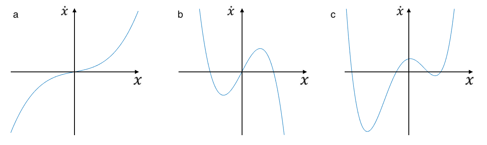

For each of the following plots of \(\dot x = f(x)\), copy the graph onto a sheet of paper and:
(i) Find the steady states,
(ii) Mark the direction of the flow along the \(x\) axis between steady states,
(iii) Determine whether each steady state is stable or unstable.
For each of the following equations, find the steady states, and classify them as stable or unstable.(Hint: recall that steady states are at \(\dot x = 0\)).
(a) \(\dot x = 3x-9 \)
(b) \(\dot x = 4x^2-16 \)
(c) \(\dot x = x^8+10 \)
(d) \(\dot x = x-x^3 \)
(e) \(\dot x = x^2+4x-12 \)
(f) \(\dot x = \sin(x) \)
Consider a skydiver falling to the ground. The skydiver's velocity \(v\) can be written as \(m\dot v = mg-kv^2\), where \(m\) is the mass of the skydiver, \(g\) is acceleration due to gravity, and \(k>0\) is a constant related to air resistance. In physics lessons, you have probably learned that the skydiver will accelerate to a certain terminal velocity and then stop accelerating (i.e. continue to fall at a constant speed). In this question, we will approach this equation from a dynamical systems point of view, to study properties of terminal velocity.
(a) Considering the velocity of the skydiver as a dynamical system, how would we describe terminal velocity from a dynamical systems perspective? Calculate terminal velocity in terms of \(m\), \(g\), and \(k\).
(b) Plot the dynamical system, and think about what happens to the skydiver if his velocity is above or below terminal velocity.
(c) What happens to terminal velocity as \(k\) is changed? Plot the dynamical system for large and small \(k\).
(d) Using the results from above, what affect do you think having a parachute open or closed has on the dynamical system? Do any parameters (\(m\), \(g\), or \(k\)) change?
You can click here to get solutions and check your answers.